Rua
Viva
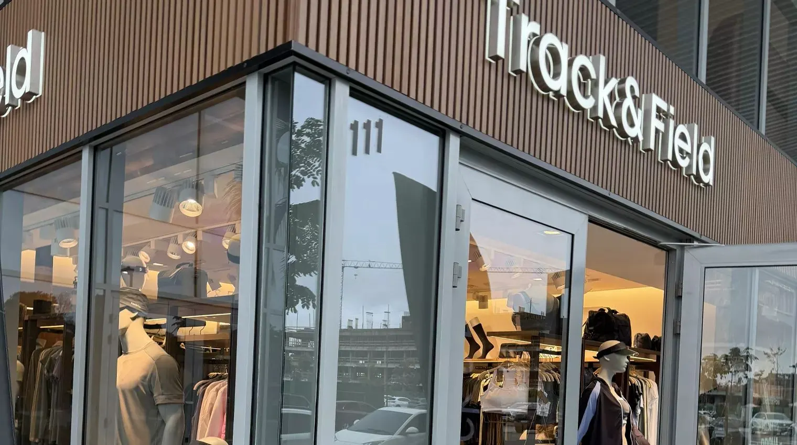
A rua de comércio e convívio do bairro. É onde ficam as lojas, os restaurantes e boa parte da programação de eventos.
O projeto foi idealizado pelo arquiteto Jaime Lerner junto com a Vokkan, a partir do conceito de walkability: tudo a poucos minutos de caminhada. Moradia, trabalho, educação, lazer e cultura dividem o mesmo bairro — e o parque é o que costura tudo isso.
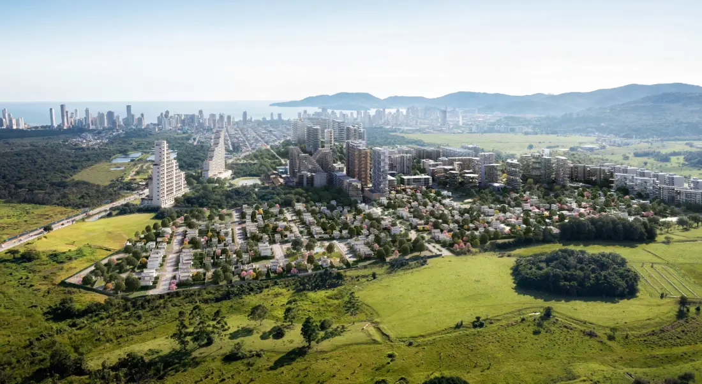
Dados divulgados pelo empreendimento em agosto de 2026.
Estes são os espaços que o bairro mantém abertos ao público. A programação varia ao longo do ano, e o acesso às áreas livres não é cobrado.

A rua de comércio e convívio do bairro. É onde ficam as lojas, os restaurantes e boa parte da programação de eventos.
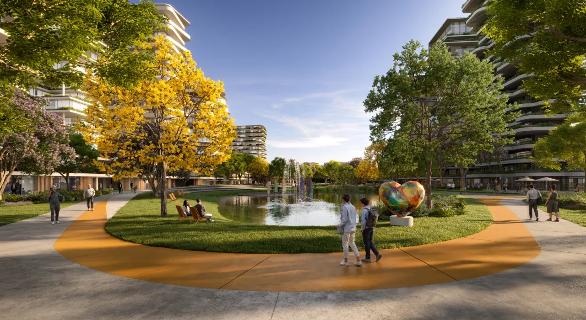
A maior área livre do bairro, usada para piqueniques, feiras e atividades ao ar livre.
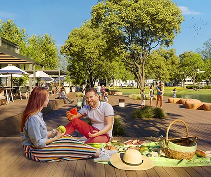
Mesas ao ar livre ligadas às operações de alimentação, no deck à beira do lago.
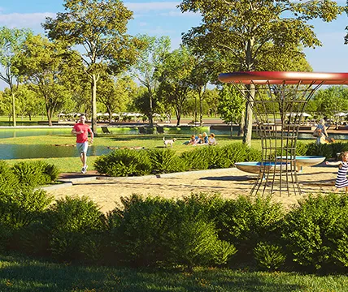
Percurso de caminhada e ciclovia dentro do bairro, ligando as praças, os lagos e as áreas de esporte.
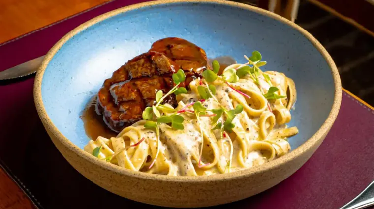
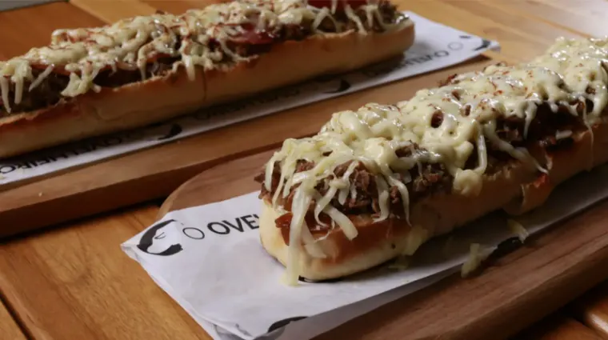
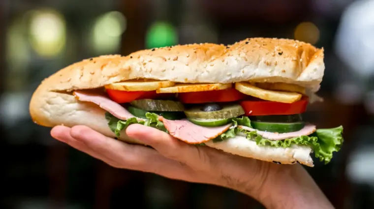
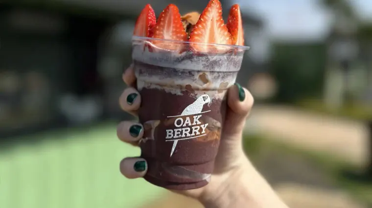
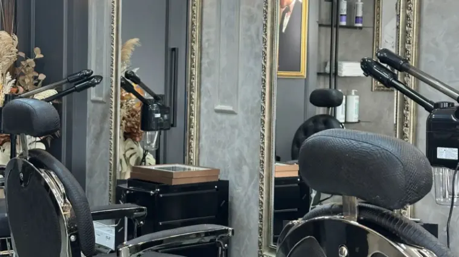
O bairro reúne operações que funcionam durante a semana inteira — escola, academias e atendimento — e que explicam por que ele recebe movimento todos os dias.
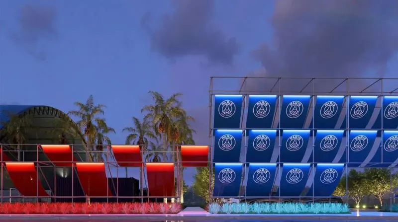
A metodologia oficial do Paris Saint-Germain, dentro do bairro.
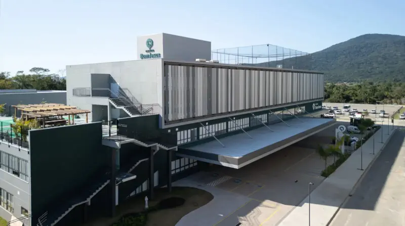
Ensino regular dentro do Vivapark, a pé de casa.
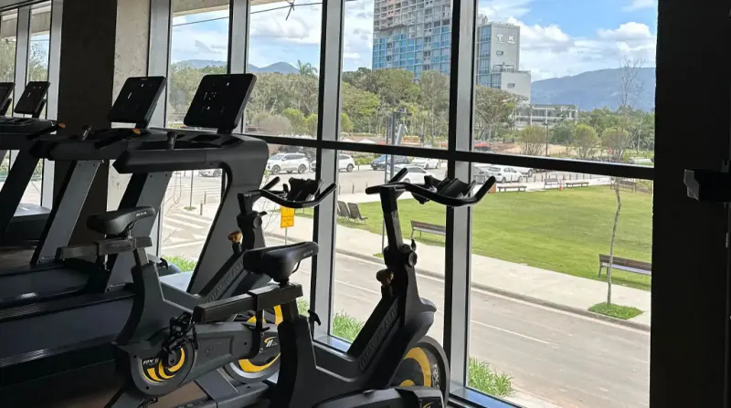
Academia com os equipamentos voltados para a área verde.
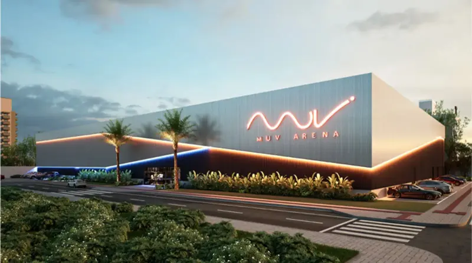
Arena esportiva para treino e competição.
Atendimento a pessoas com autismo e neurodivergentes, no mesmo bairro em que elas moram, estudam e brincam.
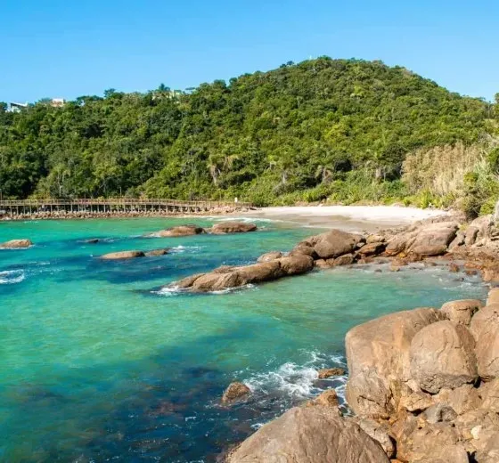
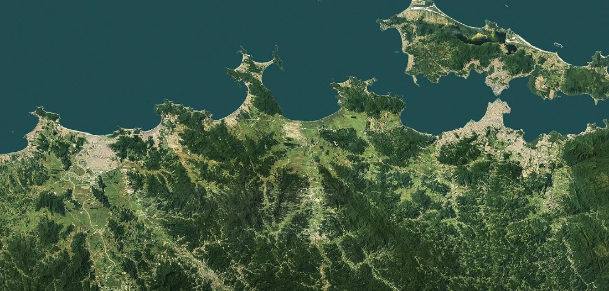
Gratuita
O bairro é aberto ao público. Não há bilheteria, ingresso ou reserva para circular pelas áreas livres, praças e pela Rua Viva.
Porto Belo, SC
Na Costa Esmeralda, entre Itapema e Bombinhas, com acesso pela BR-101 e a 2 km do Aeroporto Costa Esmeralda.
Todos os dias, 8h30 às 19h
Horário publicado para quem vai conhecer os empreendimentos. Agende pelo WhatsApp.
Agendar pelo WhatsAppAtividades podem mudar
A programação ao ar livre fica sujeita às condições climáticas e pode ser reagendada.
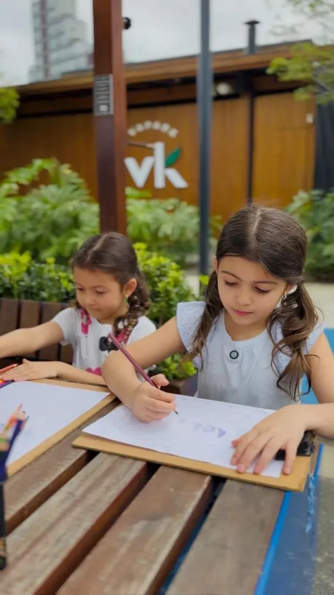
O bairro mantém uma programação frequente de eventos e atividades para públicos diferentes — de feiras e espetáculos infantis a corridas de rua. Boa parte é gratuita.
Ver a programação no InstagramA entrada é gratuita e o bairro está aberto ao público. Para agendar uma visita à Central de Vendas ou tirar dúvidas, fale com a equipe.
Pendência: o parque não publica e-mail nem telefone fixo de atendimento ao visitante.